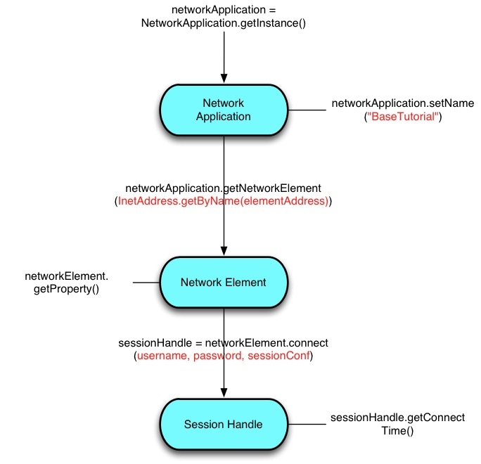

Goal
This tutorial describes how to connect to a Network Element to obtain a Session Handle.
The flow is illustrated in the following figure:
Tutorial Code
The code used in this tutorial is available in the BaseTutorial.java file located under <SDK Location>\/java/tutorials/BaseTutorial.java.
Requirements/Prerequisites
To connect to a network element, your application must have the following information available:
- Network Element hostname/IP address.
- Application authentication credentials, that is, username and password.
The network element hostname or IP address, username and password are provided for this tutorial in the tutorial.properties file. If the tutorial.properties file is not found, then arguments from the command line are used.
Steps In Detail
The BaseTutorial obtains a network_application instance, sets the name to applicationName, then gets a network_element for the IP address. The IP address is derived from either the command line arguments or the tutorial.properties file, both sources via the string format and an InetAddress formed from the IP address string. When these network element properties have been obtained, the tutorial then tries to connect to the network element with the username and password supplied, or from the tutorial.properties file.
This tutorial uses the following variables:
element_hostname = None username = None password = None transport = "tls" network_element = None session_handle = None root_cert_path = None client_cert_path = None client_key_path = None key_passphrase = None tls_pinning_file = None args = None
Instantiate a network_application instance.
network_application = NetworkApplication.get_instance()
Optionally set the application name. The network_application name is the identifier for the onePK application. (This identifier is used by show commands and to authorize access to the network services provided by the network element. Use of the network_application name is optional if the AAA functionality provided is unable to interact with a TACACS server.)
network_application.name = applicationName
From the application instance, obtain a network_element directly by providing the IP address, in String or InetAddress formats.
self.network_element = network_application.get_network_element(self.element_hostname)
OR
Connect to the network element to establish the session with authentication credentials and session configuration data. If the user is successfully authenticated, then a session_handle is returned.
session_config = SessionConfig(SessionConfig.SessionTransportMode.TLS) #default is TLS
if self.transport.lower() == "tipc" or self.transport == "2":
session_config = SessionConfig(SessionConfig.SessionTransportMode.TIPC)
#Set all the TLS properties in session_config
session_config.ca_certs = self.root_cert_path
session_config.keyfile = self.client_key_path
session_config.certfile = self.client_cert_path
session_config.set_tls_pinning(self.tls_pinning_file, PinningHandler(self.tls_pinning_file))
self.session_handle = self.network_element.connect(self.username, self.password, session_config)
Result
Congratulations! You have successfully connected to the network element with the appropriate credentials. Use this tutorial to connect to you network element before attempting any of the other tutorials.